國泰航空貴賓室
第一航廈出境管制區 4 樓。通過安檢與證照查驗後，依 Cathay Pacific Lounge 指標上樓。搭乘馬航 MH367 是否可使用國泰貴賓室，須以馬航當日指定及資格為準。
1月21日 — 1月31日｜五人同行
每日時間軸・景點導覽・機場貴賓室
照片校對說明：僅顯示已核對景點或飯店的照片；未能確認來源的照片暫時不顯示，避免圖片與文字不符。
2027年1月21日至31日｜五人家族旅行。可點選日期快速跳轉，展開每日行程插畫；照片已內嵌，離線也能瀏覽。所有時間為規劃參考，航班、餐廳與貴賓室資格仍須出發前確認。
航班登機口及行李轉盤均為當日動態資訊，出發前與抵達時請以航空公司 App、機場航班螢幕及行李條為準。行李直掛安排以同張機票及現場報到確認為前提；新德里轉國內線可能須先提領並重新托運。
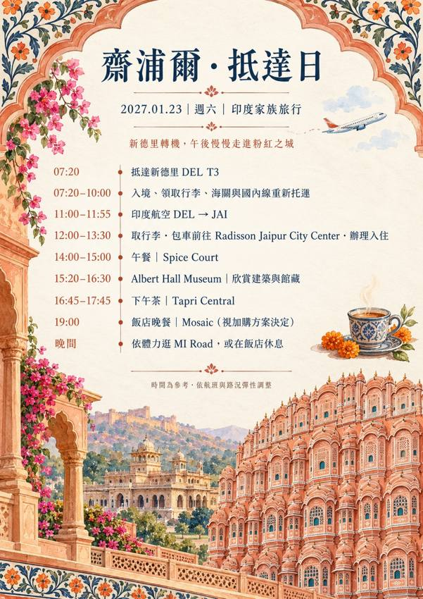
✈ 登機口：待公告｜抵達吉隆坡：行李預計直掛新德里，無須提領。
1/21 吉隆坡機場過境住宿（大哥、大嫂）。位於 KLIA 第 1 航廈國際轉機區；前往前請確認轉機區動線及飯店入住資格。訂房確認碼與 PIN 屬私人資料，未放在公開網站。
地圖 ↗吉隆坡夜間娛樂行程，表演時段與入場規則可能調整，請出發前再核實。
位置：國際線有兩處：Satellite Golden Lounge 位於衛星航廈西側 2 樓夾層（C 登機門區，搭 Aerotrain 前往）；Regional Golden Lounge 位於主航廈 H 登機門附近 4 樓夾層。WY822 登機門及實際可用貴賓室請以當日確認為準；預計 06:30 使用。
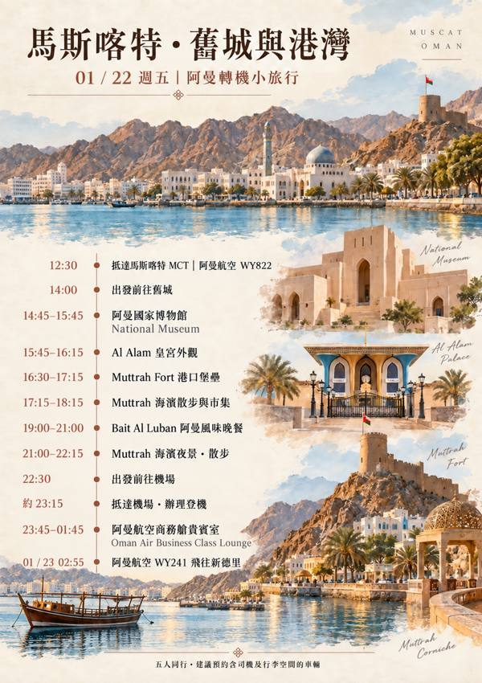
✈ 登機口：待公告｜抵達馬斯喀特：行李預計直掛新德里，無須提領。
位置：國際出境管制區中央、免稅商店上方 5 樓；由出境區 4 樓搭電扶梯或電梯上樓，與 Aerotel、Primeclass 位於同一層。WY241 出發前使用，留意現場 Oman Air Lounge 指標。
✈ 登機口：待公告｜抵達新德里 DEL T3：入境後領取行李，行李轉盤待公告。
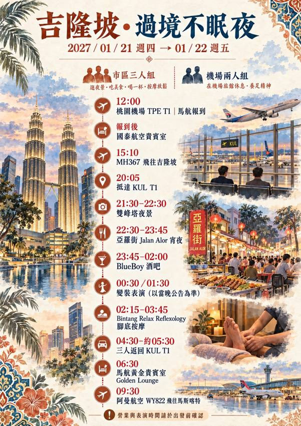
✈ 行李轉盤：待公告｜請於國際線入境行李提領區查看航班螢幕，領取從桃園直掛的行李。
✈ 登機口：待公告｜德里轉國內線須依印度入境及海關規定辦理行李轉運；齋浦爾行李轉盤待公告。
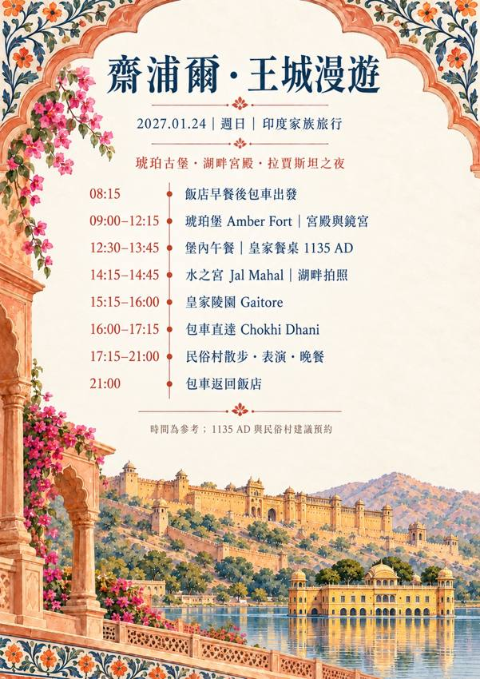
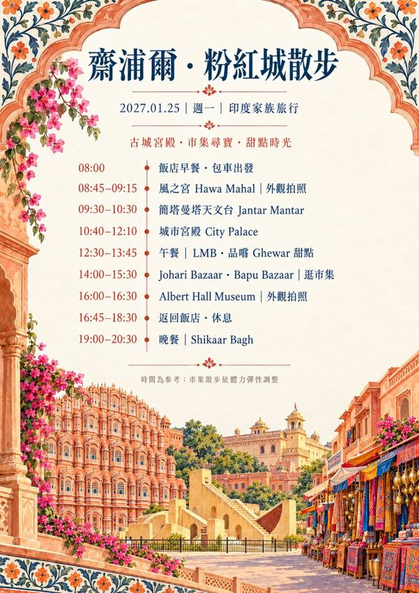
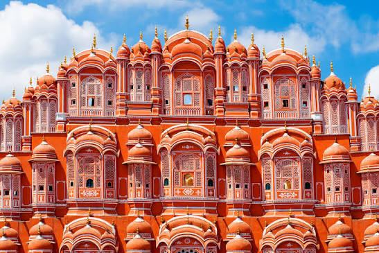
粉紅色蜂巢狀立面是齋浦爾地標，設有大量小窗供王室女性觀看街景。
1799年建成的粉紅色風之宮，蜂巢式窗格讓王室女性能從室內觀看街道活動。最適合在街道對面拍攝立面，清晨光線通常更柔和。
地圖 ↗18世紀的石造天文觀測設施，列入世界遺產。
18世紀由齋辛格二世興建的天文觀測設施，為聯合國教科文組織世界遺產。大型石造儀器可測量時間與天體位置，建議搭配導覽理解原理。
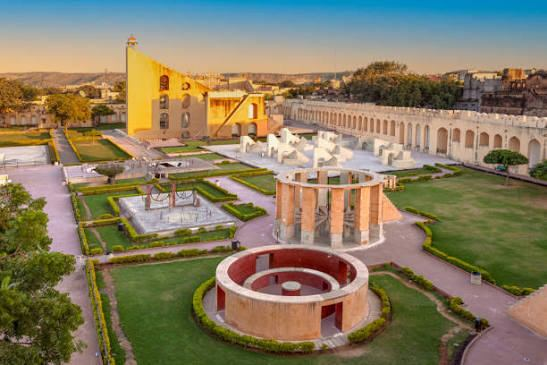
地圖 ↗齋浦爾王室宮殿建築群，融合拉其普特與莫臥兒風格。
齋浦爾王室宮殿建築群，結合拉其普特、莫臥兒與歐洲建築元素。庭院、彩繪門廊與王室藏品是參觀亮點，部分區域可能需要另外購票。
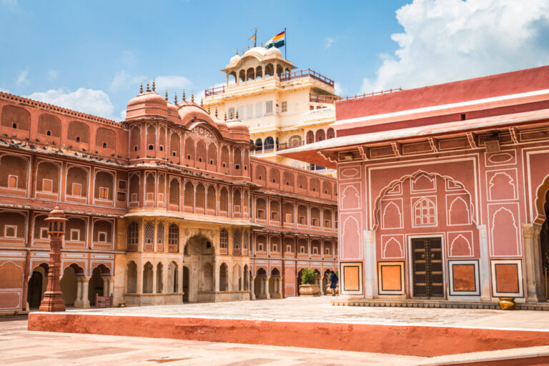
地圖 ↗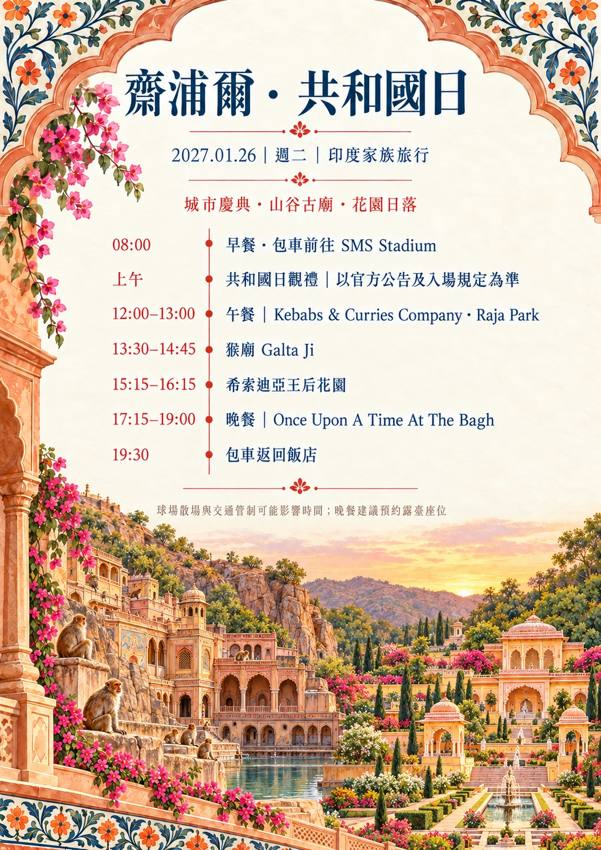
以花園環境和夜間氣氛為特色的用餐地點，適合安排齋浦爾最後一晚的晚餐。建議預約戶外座位並確認日落時間。
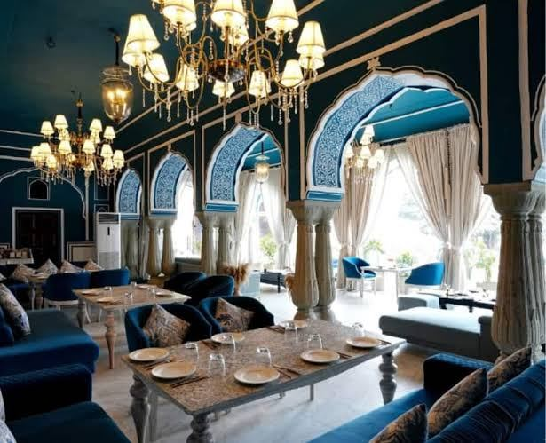
地圖 ↗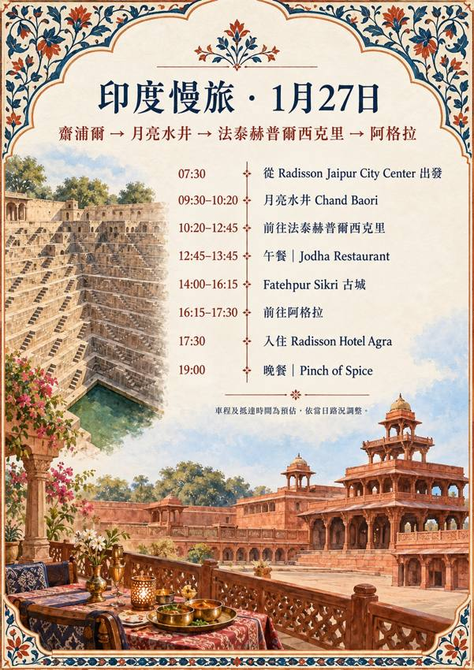
齋浦爾四晚住宿據點，方便安排粉紅城及郊區景點。兩間房的床型、加床及相鄰需求以飯店最終回覆為準。
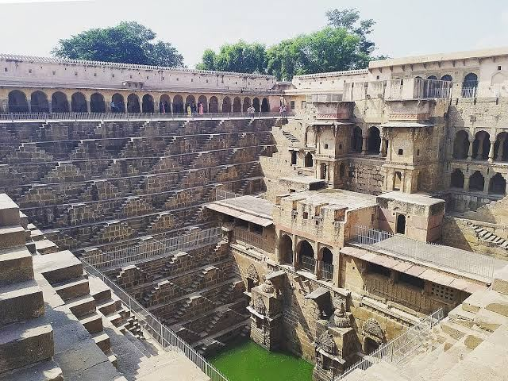
以密集對稱階梯著稱的古代水井，是拉賈斯坦邦最具幾何美感的建築之一。
位於 Abhaneri 的古老階梯水井，以層層交錯的幾何階梯聞名。階梯設計讓人們在水位變動時仍能接近水源，是拉賈斯坦邦因應乾燥氣候的水利智慧。
地圖 ↗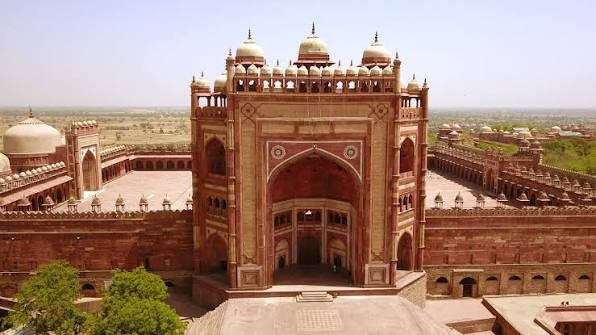
阿克巴皇帝興建的莫臥兒古都，紅砂岩宮殿與庭院保存了歷史風貌。
阿克巴皇帝於16世紀興建的莫臥兒帝國都城，後因政治與供水等因素逐漸失去首都地位。城內紅砂岩宮殿、柱廊與宗教建築融合多種藝術傳統，參觀時留意雕刻與庭院布局。
地圖 ↗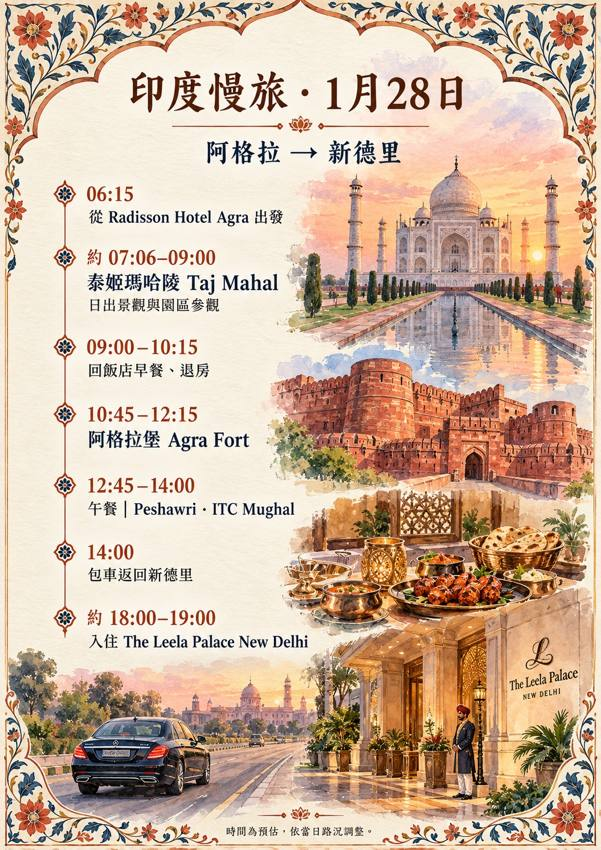
阿格拉一晚住宿，隔天清晨出發前往泰姬陵。建議前一晚整理行李並確認早餐與退房安排。
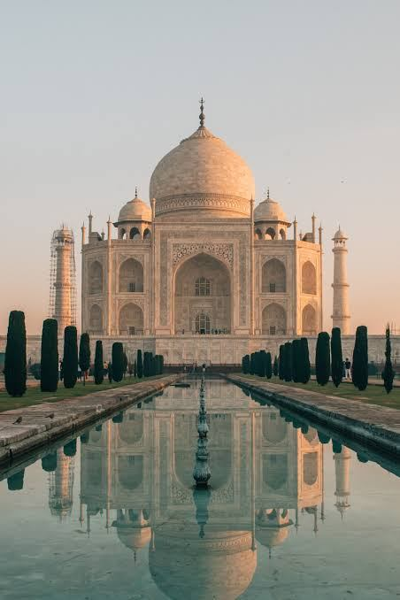
莫臥兒皇帝沙賈汗為紀念愛妻建造的白色大理石陵墓，日出時色彩最迷人。
世界文化遺產，也是莫臥兒建築最著名的代表。沙賈汗皇帝為紀念皇后穆姆塔茲・瑪哈勒而建，白色大理石隨晨光呈現柔和色澤。建議由中央水池取景，留意對稱花園、主穹頂與精細的寶石鑲嵌工藝。
地圖 ↗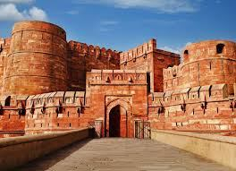
雄偉的莫臥兒紅砂岩堡壘，部分建築可眺望泰姬陵。
世界文化遺產，紅砂岩城牆包圍了歷代莫臥兒統治者使用的宮殿與庭院。可欣賞宮廷建築的紅白石材對比，部分觀景處能遠眺泰姬陵。
地圖 ↗位於 ITC Mughal 的印度西北邊境風味餐廳，特色是坦都爐烤肉、烤餅及香濃扁豆料理。適合在離開阿格拉前安排一頓較正式的午餐。
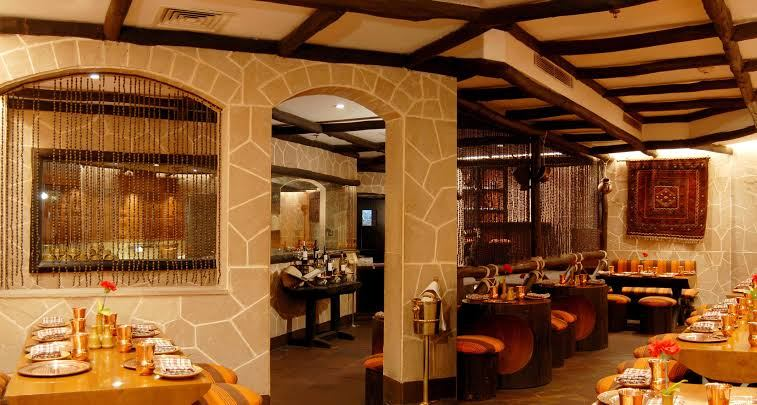
地圖 ↗這次在新德里的住宿飯店為 The Leela Ambience Convention Hotel, Delhi，並非 The Leela Palace New Delhi。退房前確認早餐及機場接送安排。
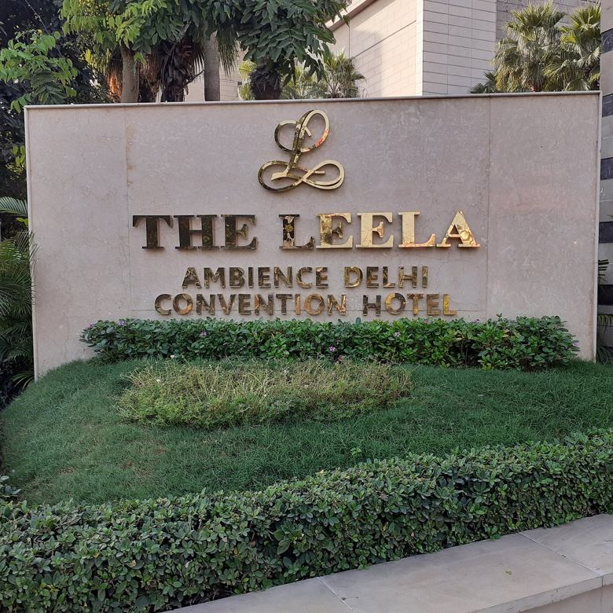
地圖 ↗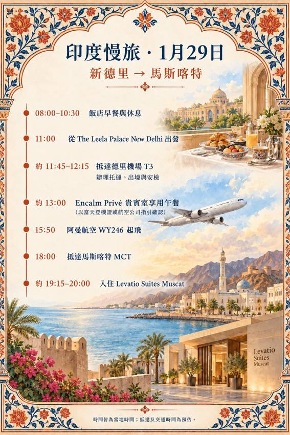
這次在新德里的住宿飯店為 The Leela Ambience Convention Hotel, Delhi，並非 The Leela Palace New Delhi。退房前確認早餐及機場接送安排。
位置：第三航廈 T3 國際線出境管制區 Level 3（3 樓）。請認明 Encalm Privé，而非一般 Encalm Lounge；WY246 的使用資格及是否改指定其他貴賓室，請依報到櫃檯或邀請卡為準。
✈ 登機口：待公告｜本段行李目的地：馬斯喀特 MCT；抵達後行李轉盤待公告，領取行李入住飯店。
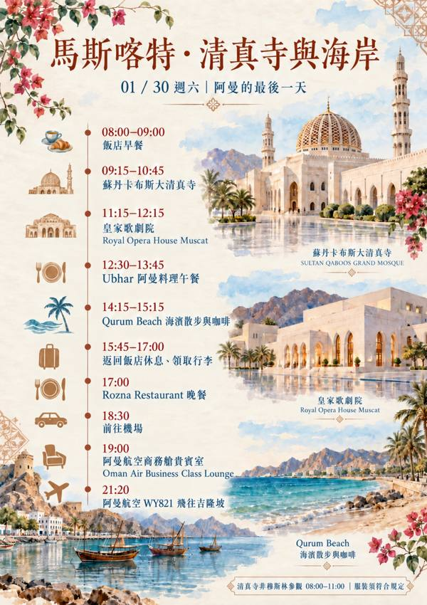
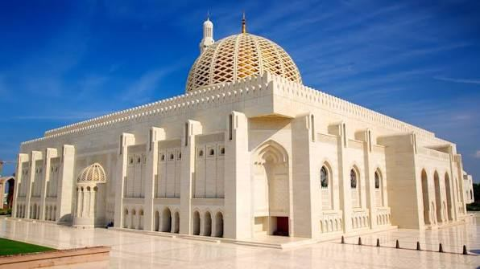
阿曼代表性清真寺，以大型祈禱大廳、圓頂與細緻伊斯蘭裝飾聞名。
阿曼最具代表性的宗教建築之一，以宏偉祈禱大廳、華麗吊燈與精細裝飾聞名。非穆斯林參觀需遵守指定時段及服裝規定，出發前再確認。
地圖 ↗位置：國際出境管制區中央、免稅商店上方 5 樓；通過護照查驗與安檢後，從 4 樓搭電扶梯或電梯上樓，跟隨 Oman Air Lounge 指標。預計 19:00 進入，搭乘 WY821。
✈ 登機口：待公告｜行李預計直掛桃園 TPE，吉隆坡轉機無須提領。
✈ 轉機登機口：待公告｜行李預計直掛桃園，不須在吉隆坡領取。
✈ 登機口：待公告｜抵達桃園 TPE：入境後領取行李，行李轉盤待公告。
第一航廈出境管制區 4 樓。通過安檢與證照查驗後，依 Cathay Pacific Lounge 指標上樓。搭乘馬航 MH367 是否可使用國泰貴賓室，須以馬航當日指定及資格為準。
國際線有兩處：Satellite Golden Lounge 位於衛星航廈西側 2 樓夾層（C 登機門區，搭 Aerotrain 前往）；Regional Golden Lounge 位於主航廈 H 登機門附近 4 樓夾層。WY822 登機門及實際可用貴賓室請以當日確認為準；預計 06:30 使用。
國際出境管制區中央、免稅商店上方 5 樓；由出境區 4 樓搭電扶梯或電梯上樓，與 Aerotel、Primeclass 位於同一層。WY241 出發前使用，留意現場 Oman Air Lounge 指標。
第三航廈 T3 國際線出境管制區 Level 3（3 樓）。請認明 Encalm Privé，而非一般 Encalm Lounge；WY246 的使用資格及是否改指定其他貴賓室，請依報到櫃檯或邀請卡為準。
國際出境管制區中央、免稅商店上方 5 樓；通過護照查驗與安檢後，從 4 樓搭電扶梯或電梯上樓，跟隨 Oman Air Lounge 指標。預計 19:00 進入，搭乘 WY821。